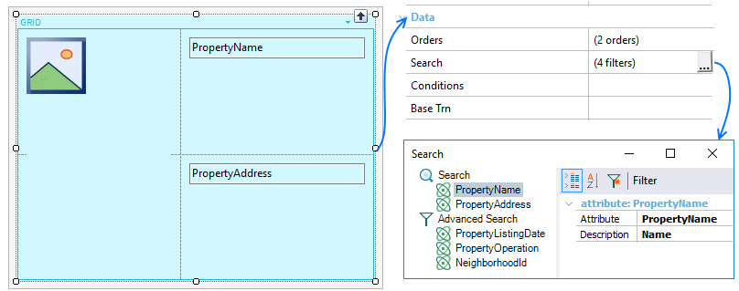
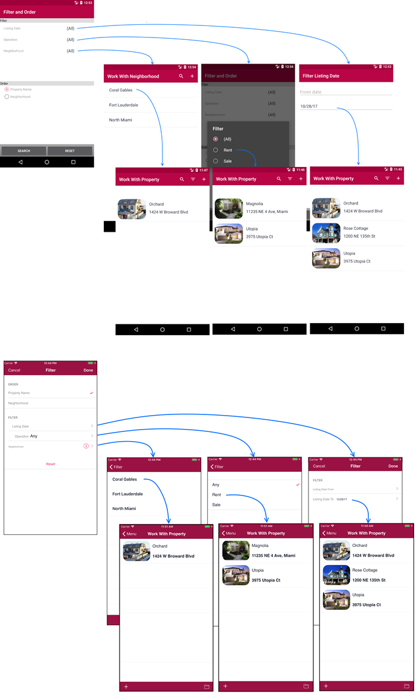

The attributes defined in the Search node will be displayed at runtime as a string to make text searches in the entity’s fields. The instance specifies the fields on which the search has to be performed.

Having the grid defined above, the search fields will be PropertyName and PropertyAddress. The implementation is an OR, that is to say, it returns any record that has that string in a field.
This property and associated node properties apply only at design-time.
The criteria used for the default attributes added by GeneXus to the search are as follows:
1) It isn’t a “foreign” attribute (that is, FK, or inferred by FK).
2) It isn’t based on an enumerated domain.
3) It is of Character data type or variations (VarChar, LongVarChar)
4) It doesn’t belong to any of the following domains: Audio, Component, Feed, Geolocation, Phone, Video.
5) Therefore, the following predefined domains are included in the search: Address, Email, Html, Url
The ones not included by default, except for the Audio and Video domains, can be added to the Search.
All characters can be used to make a search.
Defines search criteria applied to the grid.
For adding new criteria you must:
- On the Search label, right-click, select Add > Attribute.
- Select the attribute will participate in the search criteria.
- Set those properties that satisfy your requirements.
To remove an attribute from the Search, select the item, right-click, option Delete (or Delete key).
The Search node defines a set of properties for customizing the searching behavior.
| Caption property |
Message displayed in the search box. |
| Option for Individual Fields property |
Setting True (for iOS only, False by default) the developer can specify if the user can (also) restrict this search to one of the search fields.
|
| Always Visible property |
Indicates if the search box is always visible (True) or not (False, by default). |
| Filter Operator property |
Search will be done by "Begins with" or "Contains" (default) for the input value. |
| Case Sensitive property |
Search will be done sensitively (True) or insensitively (False, by default). That's means if the input value distinguishes capital from lower letters.
Note: True value is taken into account depending on DBMS support. |
| Break by property |
Indicates if the grid considers (Use Order's break by) or not (Disabled) the "break by" defined in the Search node of Orders property when the end user makes a search. For Android, Platform Default is equal to Use Order's break by value, and for iOS is equal to Disabled. |
| |
|
Each node under a Search node will have two properties.
| Attribute property |
Attribute name for which the sort criteria will apply (selectable by  ). ). |
| Description property |
Refer to Description property. |
Allows defining some filters for an advanced search. All the filters that have an entered value take part in the query, and an AND is applied among all filters. Those filters that don’t have entered values or the value is “All” when combos are involved, are not applied.
Process for adding or deleting filters are analogous to Search node.
This node has one property for indicating a display name when filtering.
| Display Name property |
Specifies advanced search name. |
| |
|
A set of properties are available for customizing those filters defined over the selected attributes.
| Attribute property |
Attribute name for which the break criteria will apply (selectable by ) |
| Description property |
Refer to Description property. |
| Type property |
Allows choosing between Standard value based on the data type of the attribute (see Notes below), or it can be a Range of this values. |
| Expression property |
A custom expression for filtering data, basing it on the filter attribute defined. |
| Values properties group |
|
| |
Default property |
Availabe only when Type property is Standard. Default selected value for filtering. |
| |
Default Begin Range property |
Availabe only when Type property is Range. Default range beginning value. |
| |
Default End Range property |
Availabe only when Type property is Range. Default range ending value. |
| |
All property |
Display all values (True) or only when select (False, by default). |
| |
|
|
Notes:
Depending on the data type, the kind of data entry offered to the user in order to filter:
Based on the grid displayed during the introduction, the runtime behavior of such control will be as follows.

This example is available on RealEstate.
|